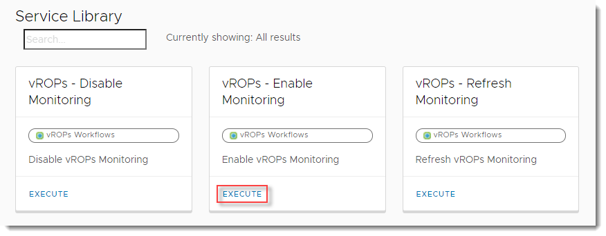
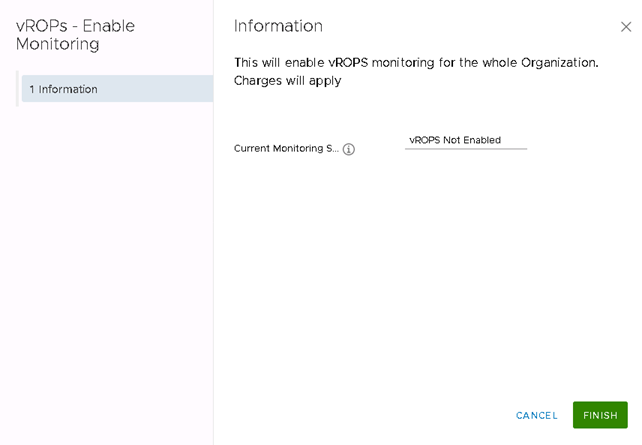
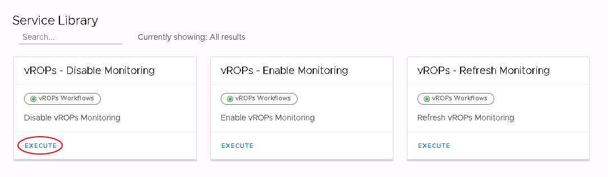

How to enable the vRealize Operations Tenant Appliance to access advanced monitoring
Overview
UKCloud for VMware provides advanced monitoring, powered by the vRealize Operations (vROps) Tenant Appliance, as part of its Advanced Management bundle (additional charges apply). Using advanced monitoring, you can view metrics and reports relating to your UKCloud for VMware environment.
Advanced monitoring enables you to:
Monitor and manage workloads - Over 400 different metrics available for CPU, memory and storage
Identify workload optimisation options - Use analytics displaying the overall health of the platform to optimise your workloads
Rightsize your VMs - Identify if your VMs can be resized to reduce costs or improve performance
View optimisation history - Identify issues over a given time frame and make adjustments as necessary
Intended audience
To enable the vRealize Operations Tenant Appliance, you must be a VMware Cloud Director Organization Administrator.
Enabling the vRealize Operations Tenant Appliance
Note
When you enable the vRealize Operations Tenant Appliance, the Advanced Management bundle is added to the account. This applies across the whole VDC organisation and will result in an uplift to the hourly VM cost across all VMs in the organisation. For more information, see the UKCloud Pricing Guide.
To make advanced monitoring available for your UKCloud for VMware environment, you need to enable the vRealize Operations Tenant Appliance:
In the VMware Cloud Director menu, select Libraries.
In the left navigation panel, under Services, select Service Library.
In the vROps - Enable Monitoring card, click Execute.

In the vROps - Enable Monitoring dialog box, click Finish.

You can monitor the progress in the Recent Tasks panel.
Disabling the vRealize Operations Tenant Appliance
If you no longer want access to advanced monitoring, you must disable the vRealize Operations Tenant Appliance:
In the VMware Cloud Director menu, select Libraries.
In the left navigation panel, under Services, select Service Library.
In the vROps - Disable Monitoring card, click Execute.

In the vROps - Disable Monitoring dialog box, click Finish.
You can monitor the progress in the Recent Tasks panel.
Next steps
After you've enabled the vRealize Operations Tenant Appliance, you can start to access metrics and reports through the Operations Manager. For more information, see How to access advanced monitoring using the vRealize Operations Tenant Appliance.
The UKCloud for VMware Advanced Management bundle also includes advanced networking options. For more information, see Advanced management options for UKCloud for VMware.
Feedback
If you find a problem with this article, click Improve this Doc to make the change yourself or raise an issue in GitHub. If you have an idea for how we could improve any of our services, send an email to feedback@ukcloud.com.